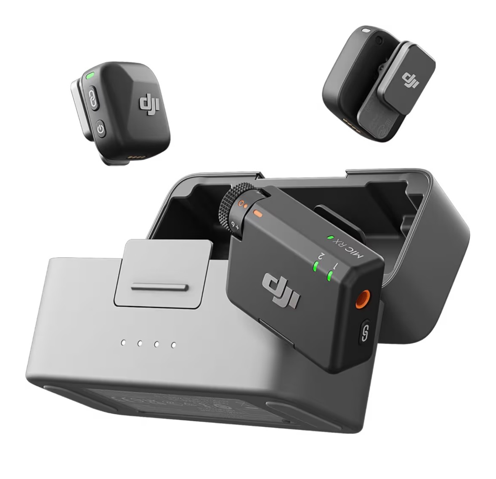
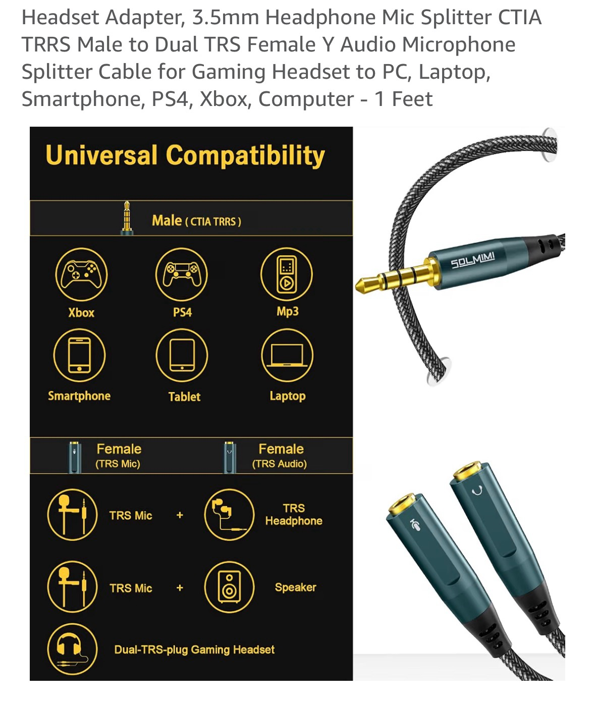
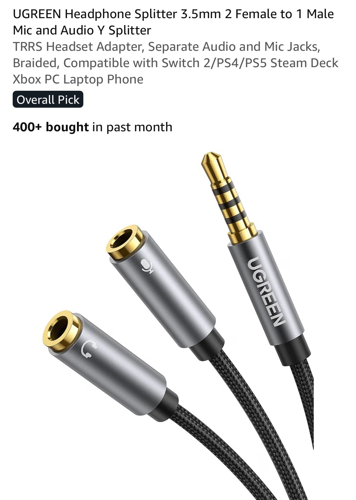
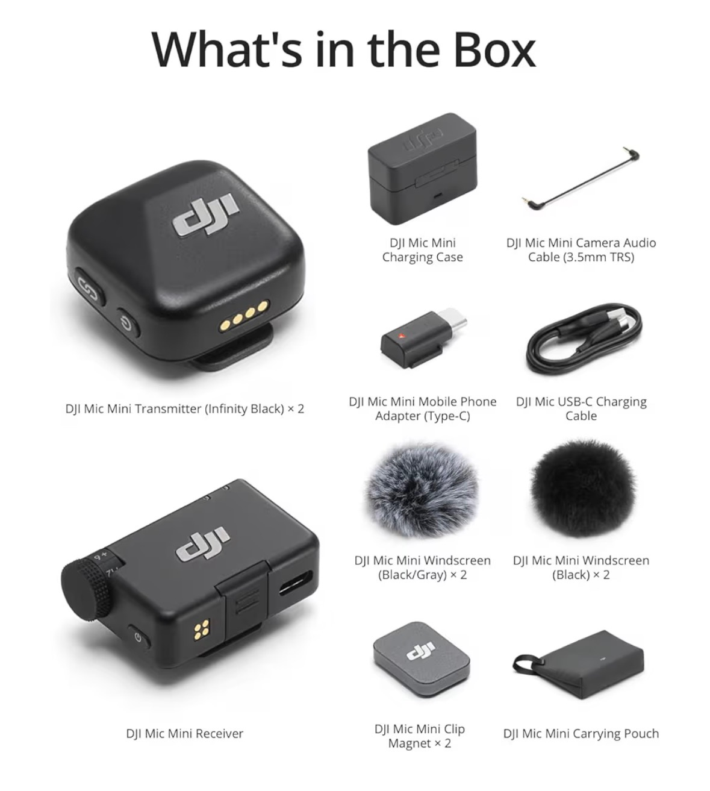
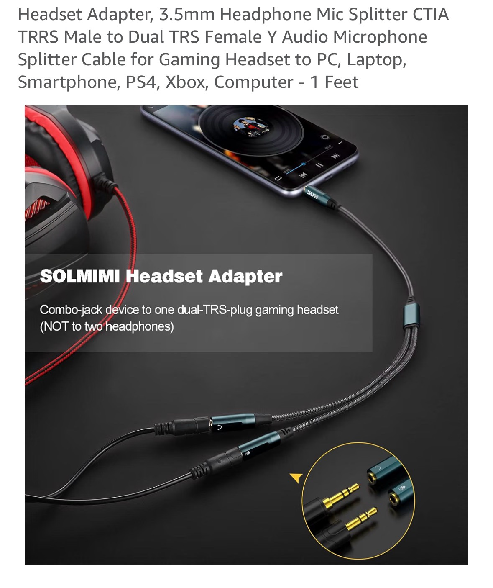
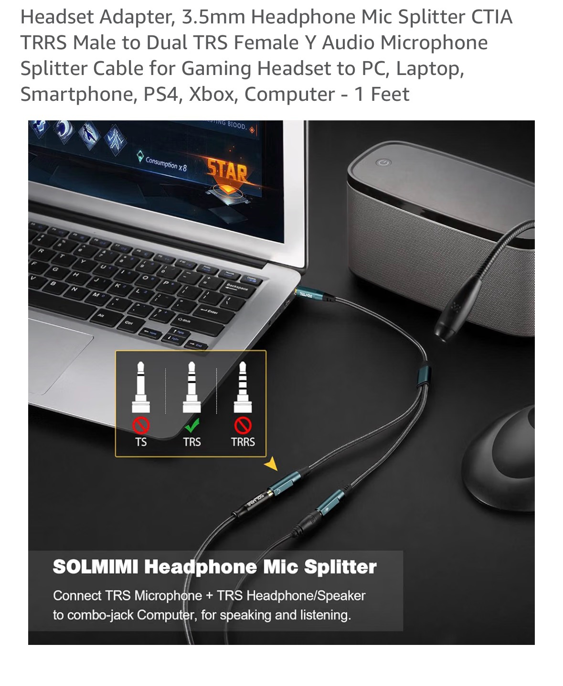
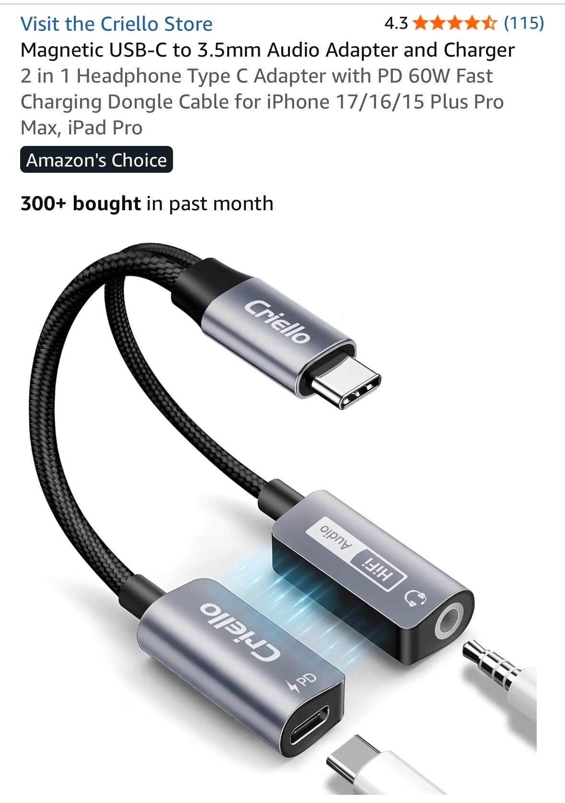
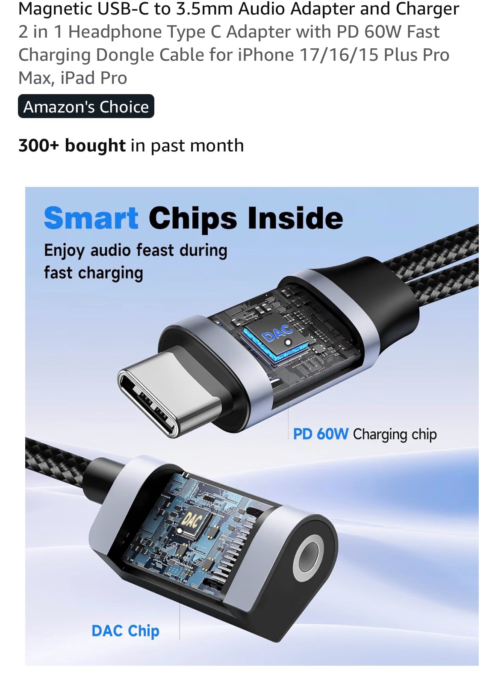

Hearing Yourself: The DJI Mic Mini Monitoring Fix
Two wireless mics, one iPhone, and the headphone problem nobody warns you about.

I run karaoke out of my car in the Tower District. Two DJI Mic Mini sets, an iPhone 16 Pro, and Smule. The mics sound great. The problem was never the mics. The problem was hearing myself.
The DJI Mic Mini does not do monitoring. That is not a setting I missed — DJI says so outright. And the little receiver has a 3.5mm jack on it that I assumed for a long time was for headphones. It is not. That jack is the analog output: mic-level voice, meant to feed a camera. It only carries your voice, and the phone's audio never comes back through it. Everything in this story follows from that one fact.
01What does not work
So you don't waste your time and money the way I almost did:
Headphones in the receiver's jack
That jack is a camera output, not a headphone output. You would hear voice only — no backing track — because the receiver never receives the phone's playback in the first place.
Wireless headphones
DJI cannot send audio to Bluetooth headphones. Even routing through the phone, Bluetooth adds roughly 150–250 milliseconds of delay: you hear the track late, sing behind the beat, and the recording comes out out of sync. Smule does not support Bluetooth headsets either, for the same reason.
Apple's wired USB-C EarPods
They have a DAC chip inside them. The DJI's analog side needs a purely analog device with no chip — and the EarPods would need the phone's one USB-C port anyway.
The passive-adapter shortcut
There is a passive adapter, the Sanoxy USB-C to 3.5mm, that Allan Tépper at ProVideo Coalition got working — but only with DJI's tiny Mobile receiver, not the standard receiver in the Mic Mini kit. Even then he reported poor sound with noticeable delay, and Target's reviews for it sit at 1.8 out of 5. I am not buying it.
02The wiring that works
The receiver works fine standing alone — it has its own battery, about six hours, and it puts out your voice as analog audio from that 3.5mm jack. So stop trying to plug the receiver into the phone. Let it stand alone, and bring its voice to the phone the analog way, through a headset splitter.
You need one piece of wiring that matters: a Y-splitter that breaks a single TRRS plug into two separate jacks — one for headphones, one for the microphone. That is the piece that routes the DJI's voice onto the phone's mic contact while your headphones take the phone's output. It has to be CTIA wiring, the iPhone standard.


Two brands make this exact part — the SOLMIMI and the UGREEN in the photos above — and either one does the job, because the wiring is the standard, not the brand.
→ 3.5mm OUT, TRS-to-TRS cable from the case
→ MIC jack of the Y-splitter
Headphones → HEADPHONE jack of the Y-splitter
Y-splitter TRRS plug → USB-C to 3.5mm adapter
→ iPhone
- Power the receiver from its own battery (or a power bank). Do not plug it into the phone's USB-C port. The phone only has one port, and the adapter is using it — and if the phone sees the DJI as a USB mic, it takes that digital input and ignores everything else. The phone still charges, because the Criello adapter hands a PD charging port back — see step 5.
- Set the receiver to Mono mode. The mic input is mono and the voice rides on the tip of the plug. In Mono, the full mix is on the tip. In Stereo mode, the tip is only the first transmitter — you'd lose the second mic.
- Run the TRS-to-TRS cable from the receiver's 3.5mm OUT into the mic jack of the Y-splitter. A note from opening my own case: there is no TRS-to-TRRS adapter in the DJI kit, whatever a retail listing claims. The case holds the TRS-to-TRS camera cable — and that cable is all you need, because the Y-splitter's mic jack is where the voice belongs.
- Headphones into the headphone jack of the Y-splitter. Plain wired headphones — analog, no DAC chip.
- Splitter into the adapter, adapter into the phone. The last link is the Criello 2-in-1 USB-C adapter Amazon delivered today (more on that delivery below). Its 3.5mm jack is TRRS, mic input included — proven, not assumed. See the silence test. And its second USB-C port is a PD 60W charger, so the phone charges while the audio runs.
- Set your level with the gain dial on the receiver. Start low and test. If it distorts, turn it down.

What you get: the backing track in your headphones, your own voice in your headphones at a level you control, and a recording with your voice only — clean, no track bleeding into the mic. The phone is simply treating the DJI like a wired headset mic.

Why the contacts matter: TRS vs. TRRS
A headphone plug is a row of contacts, and which contact your voice lands on decides everything:
| Contact | On a TRRS headset plug |
|---|---|
| Tip | Headphone out — left |
| Ring 1 | Headphone out — right |
| Ring 2 | Ground |
| Sleeve | Microphone in |
The DJI's plug is TRS, so its voice sits on the tip. That is exactly why the Y-splitter is not optional: it is the piece that takes the voice off the DJI cable and puts it onto the mic contact of the phone's TRRS connection.

The test you must not run
It is tempting, when the Y-splitter is at home and the adapter is in your hand, to plug the DJI receiver's output straight into the adapter's jack and see what happens. Don't. The DJI's TRS tip — where the voice lives — would land on the phone's headphone output contacts, and the mic contact would get nothing but the DJI's ground. Two outputs connected to each other: the phone's headphone amp pushing back into the DJI's output stage.
It almost certainly wouldn't break anything — both sides are protected against shorts — but it cannot test the mic, either. The phone would record silence, and you'd walk away thinking the mic doesn't work when the wiring was the problem. The right test needs no DJI at all. It's in section 04.
03“Headphones, or another device?”
The first time you plug a USB-C to 3.5mm adapter into an iPhone, iOS asks a question: is this headphones, or another device? It is part of Headphone Safety, around since iOS 14. It asks once per adapter, per phone, and it remembers your answer. I have two phones. On one I chose Headphones. On the other I chose Other Device. That one tap turned out to matter more than any cable in the chain.
Pick this one
Headphones
iOS treats the adapter as a headset. The mic input stays live, so the DJI voice coming in through the TRRS mic contact passes through to the phone. The trade-off is volume: iOS caps the output at about 4.5 dB below full, and the loud-sound protections apply. That is the safe-listening limit — a fair price for a working mic.
The trap
Other Device
iOS treats the adapter as an external speaker or amp. You get full volume, no cap — but the mic input does not come through. The adapter is treated as output only, so the phone hears nothing from the mic side and falls back to its own built-in mic. The track plays nice and loud, and the whole setup is defeated.
So the phone where I picked Headphones is the right phone for this rig. The other one is fixable, without buying anything:
- Open Settings → Sounds & Haptics → Headphone Safety → USB Audio Accessories.
- Turn on Connected To Headphones. That flips the adapter to the headset treatment — mic live.
- If that entry isn't there, tap Forget All USB Audio Accessories on the same screen, plug the adapter back in, and choose Headphones when it asks again.
04The silence test
Plenty of cheap USB-C adapters are output only — no mic channel at all, whatever the listing says. Before trusting the adapter Amazon delivered today, I tested it with nothing but the phone:
- Plug the adapter in, with nothing in its 3.5mm jack.
- Open Voice Memos and record about five seconds while talking.
- Record the same thing once with the adapter unplugged, to compare.
My recording with the adapter plugged in was silent — and the silence is the proof. If the adapter had no mic input, the phone would have kept its own built-in mic and my voice would be on the recording, clear as the unplugged take. Instead the phone switched its input over to the adapter's mic channel, and with nothing plugged in, that channel was open. Silent with it in, voice with it out, means TRRS with a working mic input. The adapter is good, and the plan holds.
About today's delivery
The adapter is the Criello Magnetic USB-C to 3.5mm Audio Adapter and Charger — a 2-in-1: one USB-C plug into the phone, a 3.5mm audio jack, and a second USB-C port that charges the phone at PD 60W while the audio runs. Amazon's Choice, 300+ bought in the past month, 4.3 stars. It arrived in today's Amazon delivery, order #112-1830644-7663401, three items left near the front door: one household-supplies item and two electronics. Amazon's order emails list categories only, so the name and the photos here come from the product listing itself, and the mic channel is proven by the silence test above: USB-C in, TRRS out, mic channel live, phone charging.


05In Smule, close the loop
The wiring gets the DJI's voice into the phone. Smule is what puts your voice back in your ears:
- On the recording screen, tap Audio Settings.
- Under Microphone Input, pick Headset Microphone. That is your DJI feed, arriving through the TRRS mic input.
- Set the Your Voice slider to how loud you want to hear yourself in the headphones. That slider only changes what you hear — not the recording.
One honest caveat: the “you hear yourself” part is Smule closing the loop. In a plain recording app like Camera, this same chain records the DJI voice cleanly but doesn't play it back to you live.
06The buy-your-way-out option
If you want the problem solved with money instead of wiring, the step-up model is the DJI Mic 2. Its receiver has a separate, dedicated 3.5mm headphone monitoring port, and DJI officially supports monitoring on it, with the volume adjustable on the receiver's screen. It also plays the phone's audio back without unplugging the receiver, and it charges the phone and the receiver through its USB-C port while you record. It lists at $349 and is $199 right now. That is the mic for people who want monitoring built in instead of wired around it.
I already own two Mic Minis, so the wiring fix is the one I'm using. It works, it costs nothing extra, and it took an evening of wrong turns to find. Now you don't have to take those turns.
07The whole rig, on one checklist
- Receiver on its own battery — never plugged into the phone
- Receiver in Mono mode, gain starting low
- TRS-to-TRS cable: receiver OUT → mic jack of the CTIA Y-splitter
- Wired headphones → headphone jack of the Y-splitter
- Y-splitter → Criello USB-C adapter → phone, with the adapter's PD port charging the phone
- That phone answered “Headphones” at the iOS prompt — or was fixed in Headphone Safety settings
- Adapter passed the silence test: silent recording, nothing plugged in
- Smule: Microphone Input = Headset Microphone; Your Voice slider set to taste
- Never plug the DJI output straight into the adapter's jack to “test” it
Sources
- DJI Support — “How can I connect DJI Mic series receivers to mobile devices, cameras, and computers?” — DJI’s own documentation of the splitter route: with a single 3.5mm combo jack, connect a 3.5mm splitter to separate mic and headphone connections, then a cable from the receiver’s output port to the mic input on the splitter.
- Allan Tépper, ProVideo Coalition — “DJI Mic Mini (2 TX + 1 Mobile RX) live monitoring adventure for complete audio confidence!” — Monitoring from the tiny Mobile Receiver works only through a purely analog USB-C adapter with no DAC or ADC. The Sanoxy passive adapter from Target is the one he found; he reports poor sound quality and substantial latency, and his test was on Android.
- Smule — “Microphone Input Selector for iOS” — When wired headphones are plugged in, Smule shows a Microphone Input selector above the “Your Voice” slider. Choose Headset Microphone to record from the wired feed. Bluetooth headsets are not supported by this feature.
- Sanoxy USB-C to 3.5mm Passive Headphone Adapter, Target — $14.99 at Target, rated 1.8 out of 5, with reviews saying it does not work plugged straight into an iPhone. Only useful with the Mobile Receiver, not the standard receiver.
- DJI Mic 2 pricing — DJI US store, November 25, 2026. 2 TX + 1 RX + charging case, $199 (list $349); 1 TX + 1 RX, $129. The receiver’s dedicated black 3.5mm headphone monitoring port is the feature the Mini lacks.